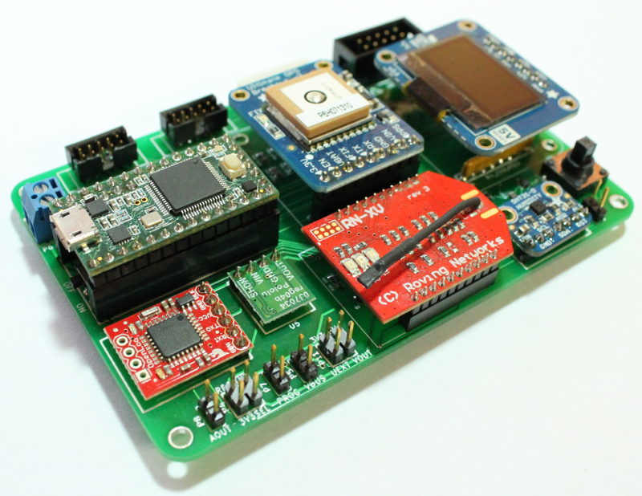

Safecast Air Prototype¶
This is the project documentation for the Safecast Air Board. Includes the parts lists and build instructions for making a Safecast Air Board.

Features¶
- Configurable air quality measurement board. Can be used as a Single or multi-sensor configurations.
- On-board temperature/humidity sensor
- Based on Teensy 3.x development board
- On-board GPS for location data (similar to the Safecast radiation sensor)
- On-board WiFi for sending real-time data to Safecast server
- Two designated headers for using up to six Alphasense 4-electrode gas sensors (both A4 and/or B4 types)
- Designated header for Alphasense Particulate Monitor (OPC-N2)
- UEXT expansion header for connecting other additional sensors or other hardware e.g. methane sensor
- SD card (OpenLog) for data storage
- LCD display
The Safecast Air board is an Open Source Hardware project. KiCad design files for the PCB can be found on Github: https://github.com/Safecast/Safecast-Air.